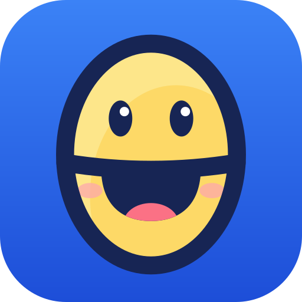

Everything in happy-theta, one click away.
From a terminal in the repo (needs Node 20+; npm install only the first time or after package changes):
cd server npm install npm run dev
Then open http://localhost:3000/phys/. Emails aren't sent; confirmation and reset links print in that terminal. Make yourself a teacher with
npm run teacher:dev -- add you@example.com. The dev database is server/data/dev.db; delete server/data/ to start fresh. Stop with Ctrl+C.